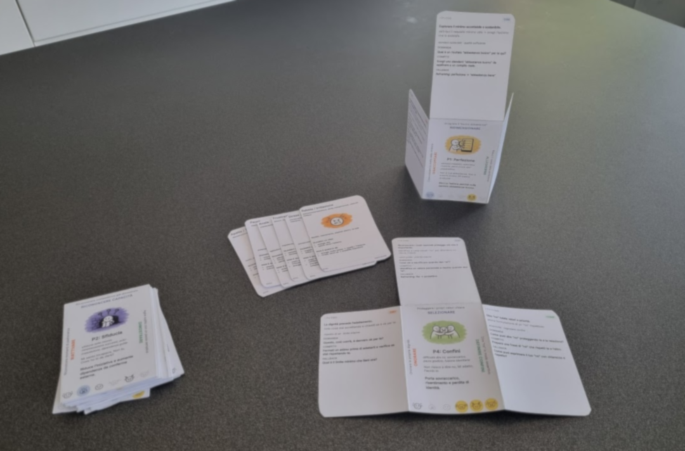

EPiC
Capire il problema non basta.
Quando una persona è bloccata, bisogna capire cosa può aiutarla a muoversi.
EPiC è il mazzo di carte, fisico e virtuale, che ti aiuta a farlo.
Pensato per coach, HR, line manager, docenti e professionisti che accompagnano le scelte e il cambiamento degli altri.
Voglio saperne di più
COS'È
Un mazzo. Un sistema. Anche online.

6 Energie. 12 Pattern. 36 Interventi.
Le carte aiutano a leggere la situazione e a scegliere come intervenire.
Gli strumenti online servono per studiare, allenarsi e usare EPiC anche in digitale.
Vai agli strumenti onlineLA PROMESSA
Più semplice. Più precisa. Più riproducibile.
Nato dal lavoro sul campo, EPiC rende più semplice, precisa e riproducibile la scelta di come intervenire.
Non sostituisce la tua esperienza. La rende più utile quando sei dentro la situazione.
Quando non sai cosa fare, non serve inventare.
Serve capire cosa sta succedendo e scegliere il passo più utile.
Voglio saperne di più